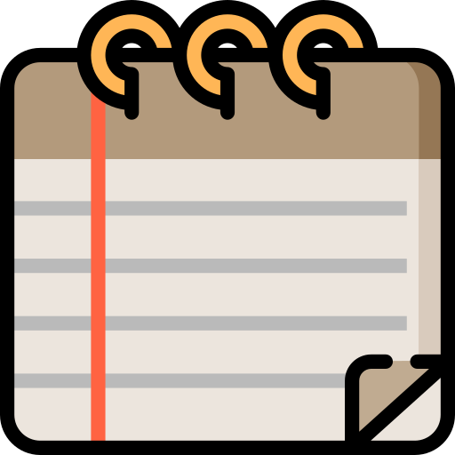

This is my webpage!

Jesús-Javier Chi-Domínguez
I am working as Senior Cryptographer Post Quantum at the Cryptography Research Center (CRC) of the Technology Innovation Institute (TII), Abu Dhabi, United Arab Emirates.
My research is currently focused on the cryptanalysis and constant-time C-code implementations of elliptic-curve and isogeny-based cryptographic protocols, where constant-time means its running-time is independent (or it does depend on randomness non-correlated) from its input.
My current research also includes code-based and lattice-based cryptography.
Additionally, I am participating in the NIST competition for “Post-Quantum Cryptography: Digital Signature Schemes (Round 1 Additional Signatures)” as a collaborator of the MIRATH and RYDE submissions.
I got a bachelor’s degree in mathematics in 2013 at the Faculty of Mathematics of the Autonomous University of Yucatan. I moved to computer sciences for the master’s and Ph.D. degrees, both of them were coursed at the Cinvestav - IPN. I did postdoctoral research stay at Tampere University, Finland where I worked on the (mathematical, and probabilistic) study of side-channel analysis applied to both existing and emerging cryptosystems.
Maybe you want to take a look at
 Curriculum Vitae;
Curriculum Vitae;- Slides from my talks;
 Publications;
Publications;- Preprints;
-  Some notes about topics of my interest;
- Conferences where I am or was a PC member;
 Collaboration in software repository projects.
Collaboration in software repository projects.
and jesus.dominguez@tii.ae
On the other hand, I am used to playing guitar and watching Anime (Japanese cartoons) in my free time; additionally, I am starting to playing the violin.
Gracias for taking your time in reading my short Bio!